A fresh empty verification workflow, preserved editor authoring and no execution; stop at the first confusing or failing state.
Status: pass
Existing editor and workflow file menu are visible.
Expected: Existing editor opens within the workspace.
Actual: Existing editor and workflow file menu are visible.
raw 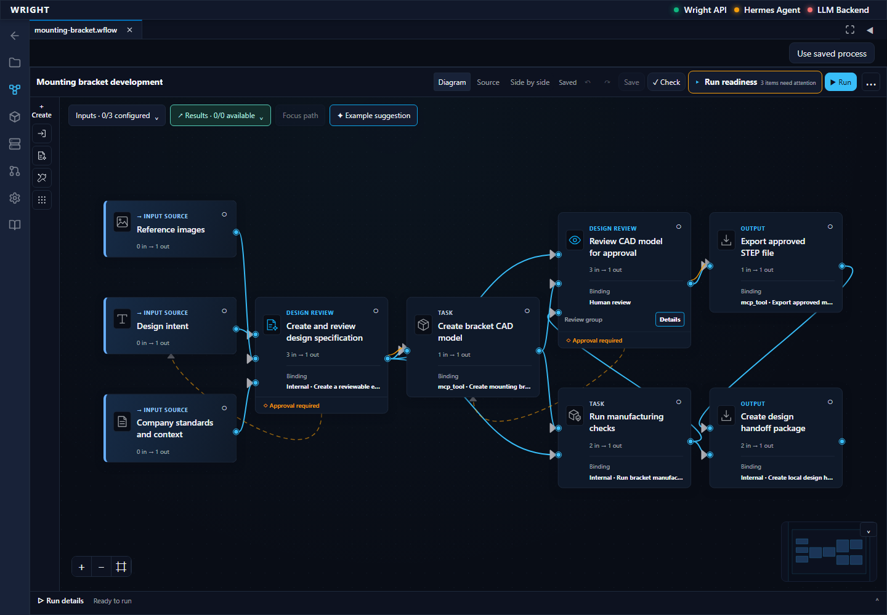
annotated 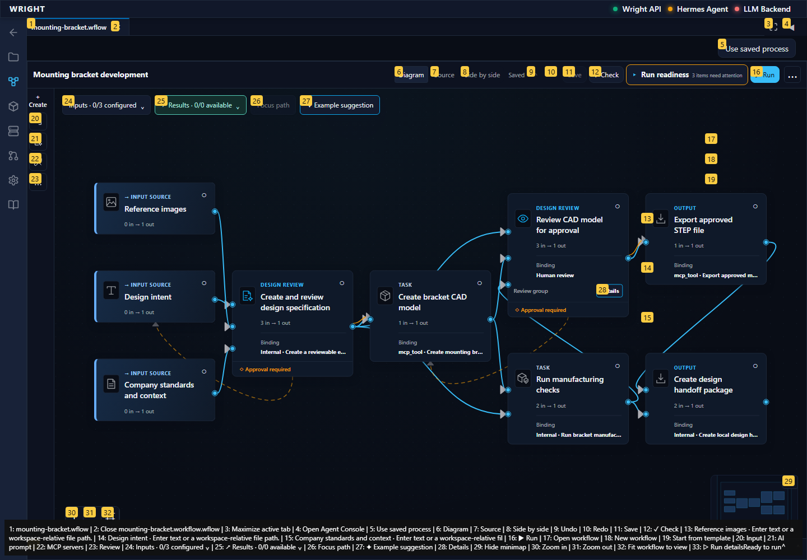
The installed dialog describes blank-workflow creation and readiness.
Expected: Instructions describe a blank workflow.
Actual: The installed dialog describes blank-workflow creation and readiness.
raw 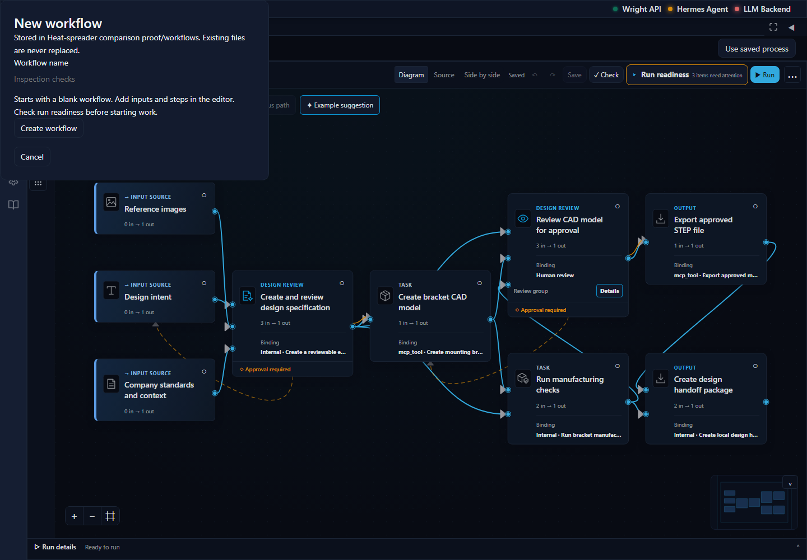
annotated 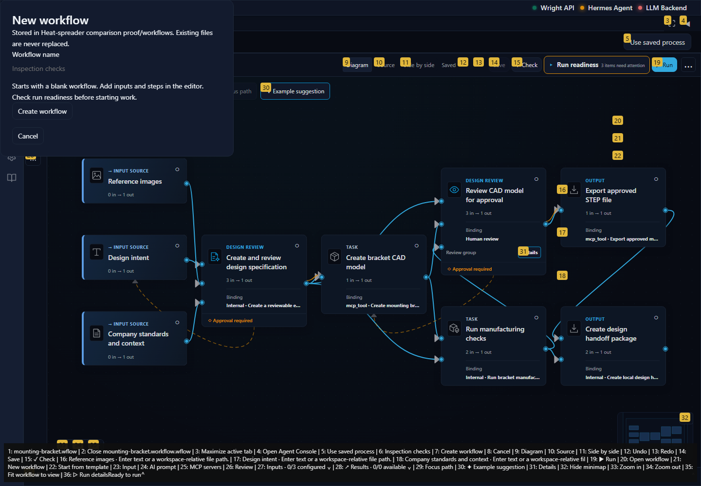
The scratch workflow source contains its name and no task/input/connection/item declarations.
Expected: A new, separate workflow has no prefilled engineering steps.
Actual: The scratch workflow source contains its name and no task/input/connection/item declarations.
raw 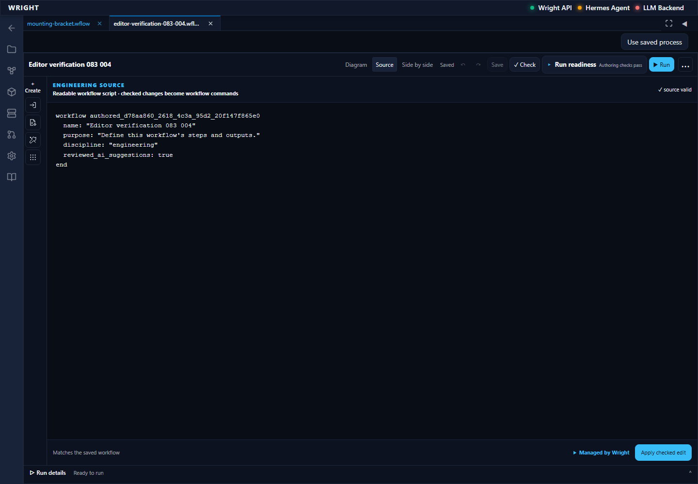
annotated 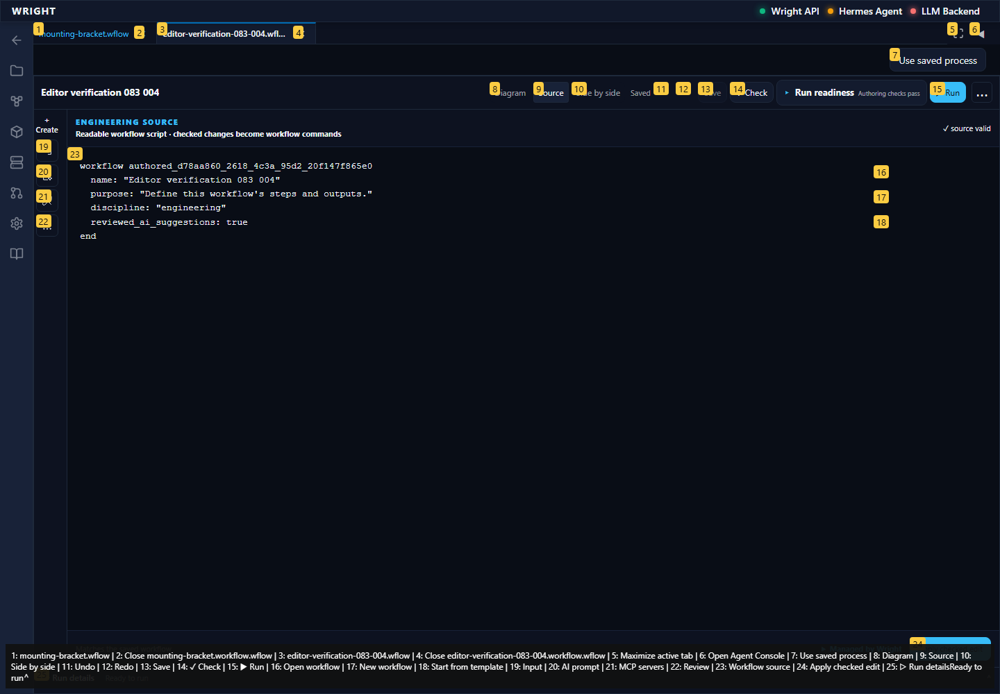
Text input and its direct inspector field are visible and configured.
Expected: Input inspector edits the same workflow.
Actual: Text input and its direct inspector field are visible and configured.
annotated 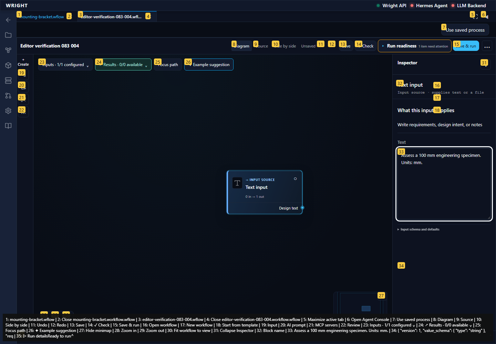
Undo removes the entered value and Redo restores it.
Expected: Both controls restore accepted editing state.
Actual: Undo removes the entered value and Redo restores it.
raw 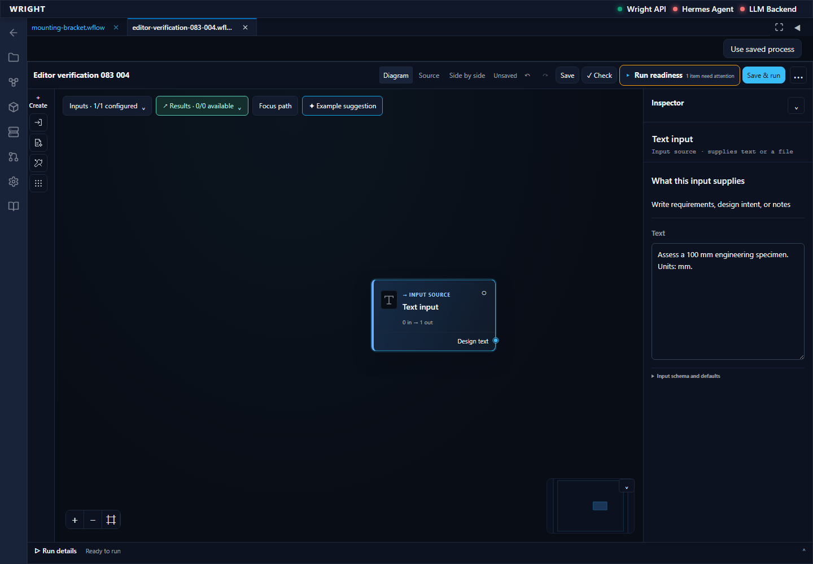
annotated 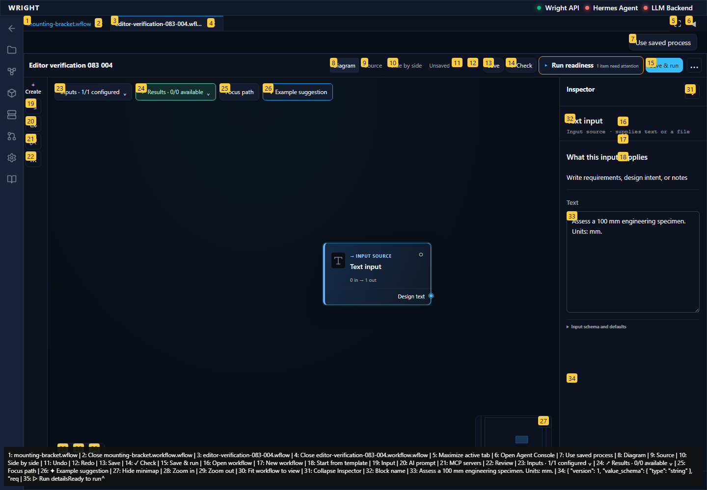
Two separate AI prompt steps appear; no model work is started.
Expected: Both new steps appear in the established canvas.
Actual: Two separate AI prompt steps appear; no model work is started.
raw 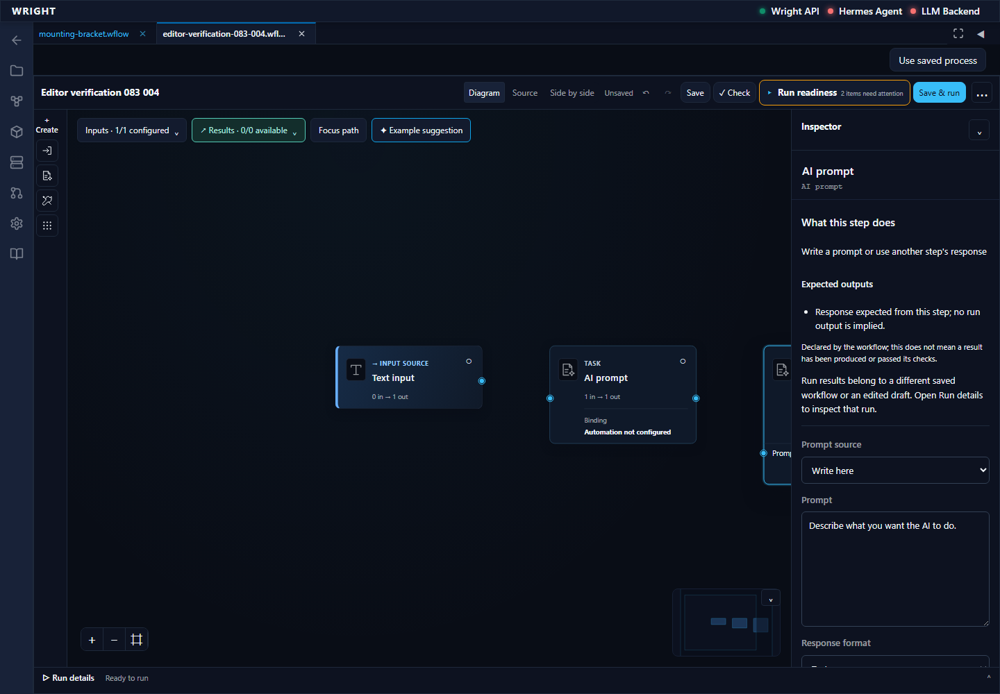
annotated 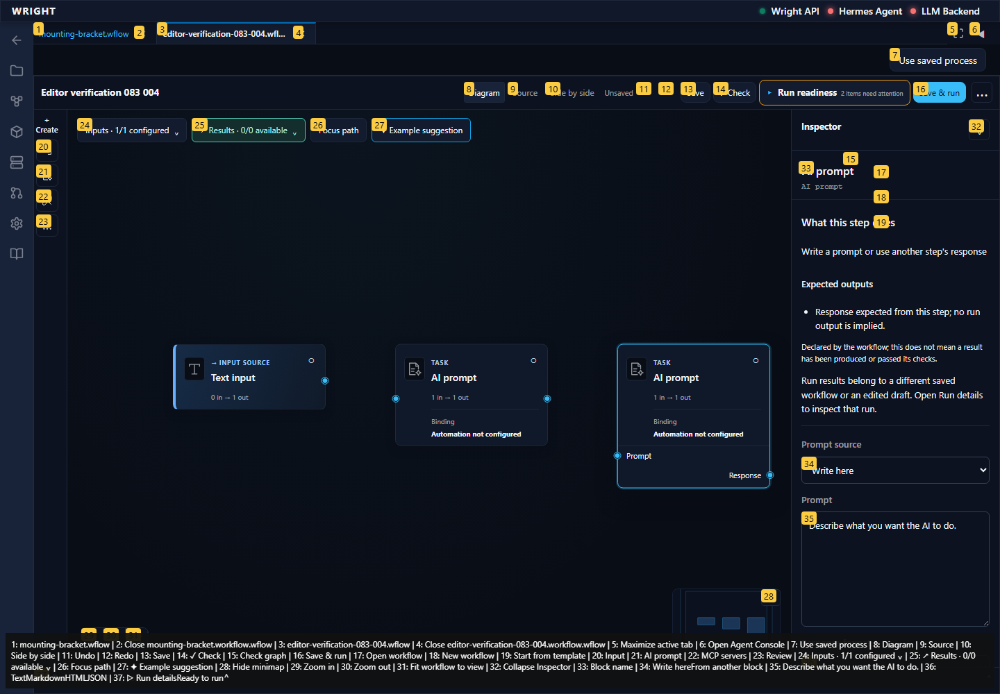
The keyboard-created connection appears in canonical source.
Expected: A type-compatible connection appears in the same source.
Actual: The keyboard-created connection appears in canonical source.
annotated 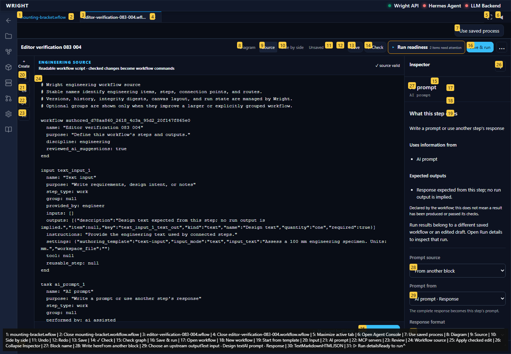
Reload restores the saved input, two AI steps and connection exactly.
Expected: The exact saved workflow reopens without execution.
Actual: Reload restores the saved input, two AI steps and connection exactly.
annotated 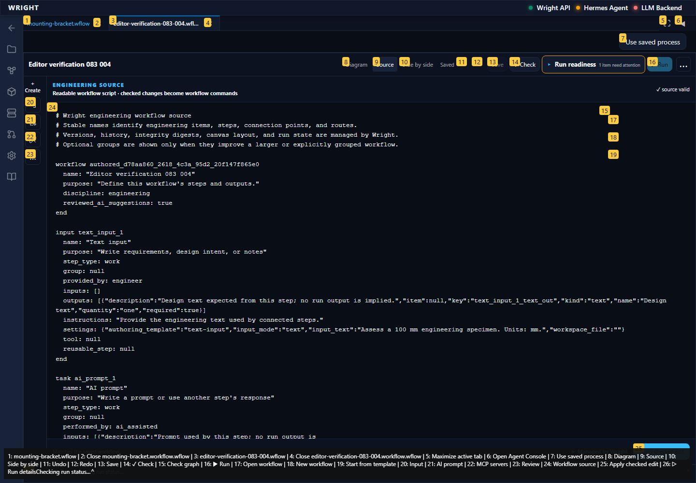
Managed-field diagnostic is visible, accepted revision is unchanged and Run is disabled.
Expected: Invalid source leaves accepted revision intact and blocks Run.
Actual: Managed-field diagnostic is visible, accepted revision is unchanged and Run is disabled.
annotated 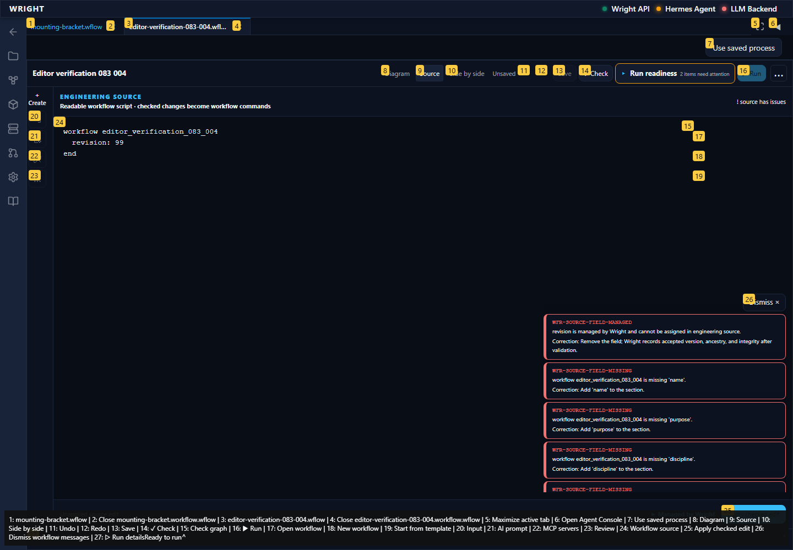